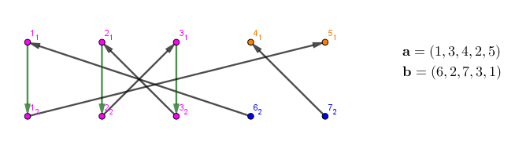

有两个长为 $n$ 的 $\texttt 0/\texttt 1$ 串 $A, B$。它们 $\texttt 1$ 的个数都为 $k$。现在要对 $A$ 进行一些操作。
令 $a_1, a_2, \cdots, a_k$ 是 $A$ 中 $\texttt 1$ 的下标，$b_1, b_2, \cdots, b_k$ 是 $B$ 中 $\texttt 1$ 的下标。然后将向量 $\mathbf a, \mathbf b$ 等概率随机重新排列。接下来按 $1$ 到 $k$ 的顺序交换 $A_{a_i}$ 与 $A_{b_i}$。
令 $P$ 为交换之后 $A$ 与 $B$ 相同的概率，求 $P \times (k!)^2$ 对 $998244353$ 取模的结果。
两行，每行一个长为 $n$ ($n \leq 10^5$) 的 $\texttt 0/\texttt 1$ 串，分别表示 $A, B$。
输出一行一个整数，表示 $P \times (k!)^2$ 对 $998244353$ 取模的结果。
因为 $A, B$ 都为 $0$ 的位置对答案不影响，因此答案 (交换之后可行的方案数) 只和 $A, B$ 中均为 $\texttt 1$ 的位置个数 (这些位置的集合记作 $A$) 和 $A$ 中为 $\texttt 1$，$B$ 中为 $\texttt 0$ 的位置个数 (同理记作 $B$) 有关。
由于 $A$ 中 $\texttt 1$ 的个数等于 $B$ 中 $\texttt 1$ 的个数，因此 $A$ 中为 $\texttt 1$，$B$ 中为 $\texttt 0$ 的位置数 ($|B|$) 等于 $A$ 中为 $\texttt 0$，$B$ 中为 $\texttt 1$ 的位置数 (这些位置的集合记为 $C$)，即 $|B| = |C|$。
我们构造一张 $2k$ 阶图 $G$，对 $v \in \mathbf a$，这个点记为 $v_1$，若 $v \in \mathbf b$，则记为 $v_2$。
考虑一次交换 $(u, v)$，其中 $u \in \mathbf a, v \in \mathbf b$，我们连一条从 $v_2$ 到 $u_1$ 的有向边。
然后对于所有 $v \in A$ ($\mathbf a \cap \mathbf b$)，连接一条从 $v_1$ 到 $v_2$ 的有向边。
对于任意一个交换序列 (方案)，我们考虑由这个序列生成的图 (当然，不同的序列可能可以得到相同的图)。
由基础图论知识可知，这个图有 $2 \left( |A| + |B| \right)$ 个顶点和 $2|A| + |B|$ 条边，于是它由 $|B|$ 条链和若干 ($\geq 0$) 个圈构成。由于 $B$ 中的点出度为 $0$，$C$ 中的点入度为 $0$，那么这所有 $|B|$ ($= |C|$) 条链一定是从 $C$ 中的点出发指向 $B$ 的 (例子见下图，其中 $A$ 集合对应紫色点，$B$ 集合对应橙色点，$C$ 集合对应蓝色点)。
当然，前面说过，不同的方案生成的图可能相同。我们来计算，对给定的一张图，有多少种方案是能达成目标的 (串 $A$ 和串 $B$ 相同)。
首先，能生成一张固定的图的方案数一定是 $\left( |A| + |B| \right)!$，因为如果图互相同构，则原方案最多只是交换一下位置而已。
齐次，我们考虑这图中的每一条链 (由上可知，一定是从 $C$ 中的点出发指向 $B$ 中的点的)，我们考虑链中的所有边组成的交换子序列。
易知这个子序列中的交换和外界是独立的。设链长为 $2x - 1$ (即设交换次数为 $x$)，则这个链原本有 $x!$ 种顺序。但是，试验一下可以发现，有且仅有一种交换序列可以使得串 $A$ 中的这部分和串 $B$ 一样——即按照链的自然顺序交换。
然后是环，由于环中的点都在 $A$ 中，因此它们的顺序无所谓。
因此，设这张图的所有 $|B|$ 条链的长度分别为 $2 x_1 - 1, 2 x_2 - 1, \cdots, 2 x_{|B|} - 1$，那么这所有 $\left( |A| + |B| \right)!$ 种方案中，只有
$$ \frac {\left( |A| + |B| \right)!} {\displaystyle \prod_{i=1}^{|B|} x_i!} $$
种是有效的。
考虑使用 DP 计算所有图的方案总和。
先抛开 $B$ 中的点和 $C$ 中的点，用 $f_{i, j}$ 表示 $A$ 中 $j$ 个点形成 $i$ 条链的方案数。有 $f_{0, 0} = \left( |A| + |B| \right)!$，考虑转移，有枚举最后一个点所在链上有 $k$ 个点 (于是交换次数为 $k + 1$)，有
$$ f_{i, j} = \sum_{k=0}^j \frac {f_{i-1, j-k}} {(k + 1)!} $$
最后再来计算答案。设这所有 $|B|$ 条链一共经过了 $j$ 个 $A$ 中的点，则有 $f_{|B|, j}$ 种方案。又由于它们最后和 $|B|$ 的哪个点相连不确定，因此还要乘上 $|B|!$，由于 $f_{|B|, j}$ 中这 $j$ 个点是无标号的，因此还要乘上排列数 $A_{|A|}^j = |A|^{\underline j}$，$A$ 中剩下的点随便连，于是还要乘 $(|A| - j)!$，故总的方案数即为
$$ f_{|B|, j} |A|^{\underline j} \cdot \left( |A| - j \right)! \cdot |B|! = f_{|B|, j} \cdot |A|! \cdot |B|! $$
对 $j$ 求和 ($0 \sim |A|$)，即得总的方案数。
于是时间复杂度 $O \left( n^3 \right)$。
不过可以发现，时间复杂度的瓶颈在于计算 DP 值。不过由这个转移方程可以发现，这个 DP 值是一个明显的卷积形式：
令 $h = \left( \dfrac 1 {1!}, \dfrac 1 {2!}, \cdots, \dfrac 1 {(|A| + 1)!} \right)$，那么就有：$f_i = f_{i-1} \ast h$，由卷积的结合律，由 $f_{|B|} = f_0 \ast h^{|B|}$，于是可以使用多项式快速幂 (或者指数与对数) 在 $O \left( n \log^2 n \right)$ 时间内得到 $f_{|B|, j}$ 的值。
总时间复杂度 $O \left( n \log^2 n \right)$。
#include <bits/stdc++.h>
#define N 140000
#define lg2(x) (31 - __builtin_clz(x))
using std::reverse;
typedef long long ll;
const ll mod = 998244353, root = 31;
int A, B, n;
char scx[2][N], *p, *q;
int z[N], y[N], buf1[N], buf2[N];
int fact[N], finv[N];
ll PowerMod(ll a, int n, ll c = 1) {for (; n; n >>= 1, a = a * a % mod) if (n & 1) c = c * a % mod; return c;}
void init(){
int i;
for(*fact = i = 1; i < N; ++i) fact[i] = (ll)fact[i - 1] * i % mod;
--i; finv[i] = PowerMod(fact[i], mod - 2);
for(; i; --i) finv[i - 1] = (ll)finv[i] * i % mod;
}
namespace Poly {
int l, n; ll iv;
int x[N], y[N], buf[N];
int rev[N];
void NTT_init(int length) {
n = 1 << (l = length); iv = PowerMod(n, mod - 2);
ll g = PowerMod(root, 1 << 23 - l);
x[0] = 1; rev[0] = 0;
for (int i = 1; i < n; ++i) {
x[i] = (ll)x[i - 1] * g % mod;
rev[i] = (i & 1 ? rev[i - 1] | 1 << (l - 1) : rev[i >> 1] >> 1);
}
}
void DNTT(int *d, int *t){
int i, *j, *k, len = 1, delta = n, R;
for (i = 0; i < n; ++i) t[rev[i]] = d[i];
for (i = 0; i < l; ++i) {
delta >>= 1;
for (k = x, j = y; j < y + len; k += delta, ++j) *j = *k;
for (j = t; j < t + n; j += len << 1)
for (k = j; k < j + len; ++k){
R = (ll)y[k - j] * k[len] % mod;
k[len] = (*k - R < 0 ? *k - R + mod : *k - R);
*k = (*k + R >= mod ? *k + R - mod : *k + R);
}
len <<= 1;
}
}
}
using Poly::DNTT;
void PolyPowerMod(int n, int k) {
Poly::NTT_init(lg2(k) + 2); int n0 = Poly::n, i;
for (; n; n >>= 1) {
if (n & 1) {
DNTT(y, buf1); DNTT(z, buf2);
for (i = 0; i < n0; ++i) buf1[i] = (ll)buf1[i] * buf2[i] % mod;
DNTT(buf1, y); reverse(y + 1, y + n0);
for (i = 0; i <= k; ++i) y[i] = y[i] * Poly::iv % mod;
for (; i < n0; ++i) y[i] = 0;
}
DNTT(z, buf1);
for (i = 0; i < n0; ++i) buf1[i] = (ll)buf1[i] * buf1[i] % mod;
DNTT(buf1, z); reverse(z + 1, z + n0);
for (i = 0; i <= k; ++i) z[i] = z[i] * Poly::iv % mod;
for (; i < n0; ++i) z[i] = 0;
}
}
int main() {
int i; ll ans = 0;
scanf("%s%s", scx[0], scx[1]);
for (p = scx[0], q = scx[1]; *p; ++p, ++q) A += *p & *q & 1, B += *p & ~*q & 1;
n = A + B; init();
for (i = 0; i <= A; ++i) z[i] = finv[i + 1];
*y = 1; PolyPowerMod(B, A);
for (i = 0; i <= A; ++i) ans += y[i];
ans = ans % mod * fact[A] % mod * fact[B] % mod * fact[A + B] % mod;
printf("%lld\n", ans);
return 0;
}
坑1：多项式的次数 ($|A|, |B|$) 和要计算的指数搞清楚，不要混淆了。